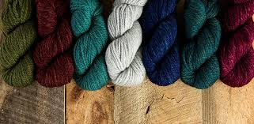
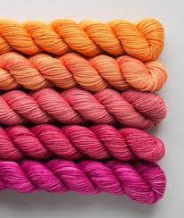
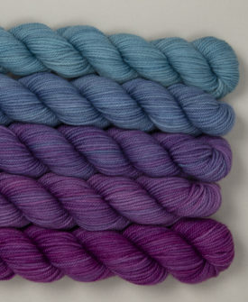

Yesulen Tsedensodnom
Student
My name is Yesulen and my hobby is crocheting.
I learned crocheting and knitting during
during Covid-19 quarantine to feel productive.
I have crocheted some things for me, my
nephew, my boyfriend and I have also taught
my little sibling how to crochet. It is a very
calming activity, but sometimes very challenging.
Here are some fancy yarn pics:



Visit my small business
Phone number: 95612088